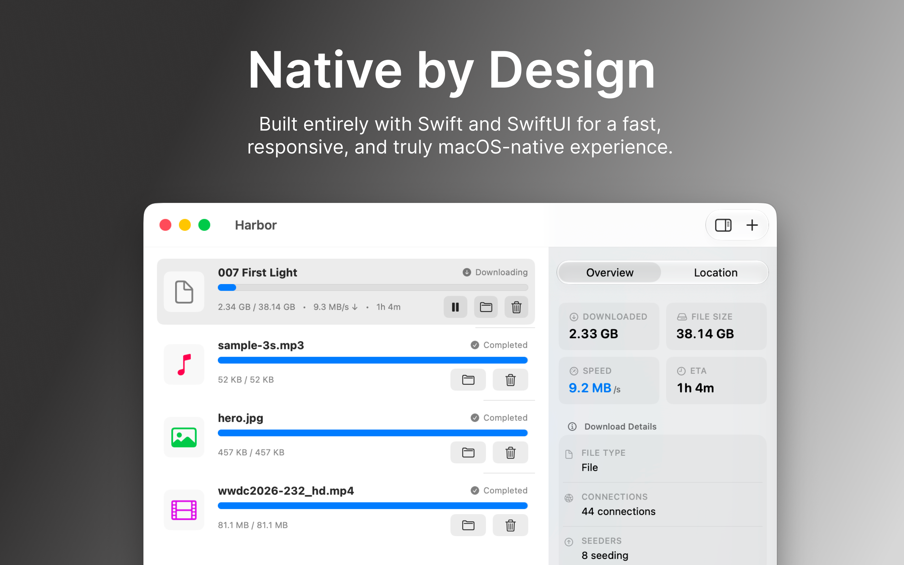

Harbor turns your Mac into a home download & media center, allowing iPhone, iPad, Apple TV, and Vision Pro to access, play, and manage content anytime.

Harbor integrates downloading, file organization, local sharing, and cross-device playback into a single seamless workflow.
Powered by Aria2, supporting multi-threaded downloading, auto-resume, and global speed limits. Easily handle large files and massive tasks to unleash your full bandwidth.
Supports zip, rar, 7z, tar, gz, and other mainstream formats. Decompress files automatically upon download completion without manual intervention.
Built-in automation rules engine. Automatically organize movies, TV shows, music, AI models (like safetensors), and documents based on file extensions.
Built-in high-performance player supporting MP4, MKV, MOV, and other popular formats. Offers 4K HDR, Dolby Vision, external subtitles, and AirPlay streaming to the big screen.

Harbor automatically discovers devices in your local network using Bonjour. With Tailscale and ZeroTier remote access, you can securely access your server anytime without a public IP.
Every interface is built natively with SwiftUI. Silky smooth, with none of the lag associated with web-wrapper apps.
We are committed to building the ultimate seamless download and media loop for the Apple ecosystem.